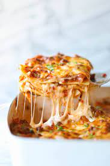

Lasagna

Ingredients (serves 8 people)
Bolognese sauce:
- 1.5 tablespoon olive oil
- 1.5 large onion finely chopped
- 1.5 large carrot peeled and finely chopped
- 1.5 stick celery finely chopped
- 750g beef mince
- 600g tinned chopped tomatoes
- 600ml beef stock
- salt and pepper to taste
Bechamel sauce:
- 75g butter
- 75g flour
- 750ml milk
- 75g parmesan cheese grated
- salt and pepper to taste
Lasagne::
- 9 lasagne sheets
- 75g parmesan cheese grated
- 1.5 ball mozzarella sliced into 8 pieces
Instructions
bolognese sauce:
- Start by making the bolognese sauce.Put the olive oil in a wide,deep saucepan and add the chopped onion,carrots and celery.Cook with the lid on over a gentle heat for about 5 minutes,until softened but not coloured.
- Turn the heat up to high and add the mince.Fry for 5 minutes,or until the mince has browned all over and is flecked with darker brown.
- Tip in the tinned tomatoes and beef stock,plus salt and pepper to taste,Bring to the boil, then turn the heat down low and simmer for 30 minutes
bechamel sauce:
- While the bolognese sauce is simmering,make the bechamel sauce.Put the butter in a large saucepan over a gentle heat until all the butter has melted and just started to bubble
- Sprinkle in the flour and stir to combine.Allow this mixture to cook for 2 minutes on a very low heat,stirring occasionally.
- Very gradually add the milk,stirring constantly.Make sure each bit of milk is incorporated before you add the next bit.If you do this slowly on a very low heat,you should end up with a perfectly smooth bechamel sauce with no lumps and no need to whisk.However,if it does go wrong for some reason,you can always use a whisk to beat out the lumps.
- When all the milk is incorporated,add the parmesan cheese,salt and pepper to taste.Stir to combine,then turn off.
lasagne:
- Preheat your oven to 220C/ 200C fan / gas mark 7 / 425F
- Put half the bolognese mixture in a large rectangular ovenproof dish.Lay over 3 lasagne sheets.Pour over half the bechamel sauce.
- Repeat this process with another layer of bolognese,another layer of lasagne and another layer of bechamel.
- Finally,add the sliced mozzarella cheese and sprinkle over the remaining parmesan.
- Cover the lasagne with foil and cook for 20 minutes.
- Remove the foil and cook for a further 15 minutes or until brown on top and bubbling round the sides.
- Serve with a simple side salad,some garlic bread!